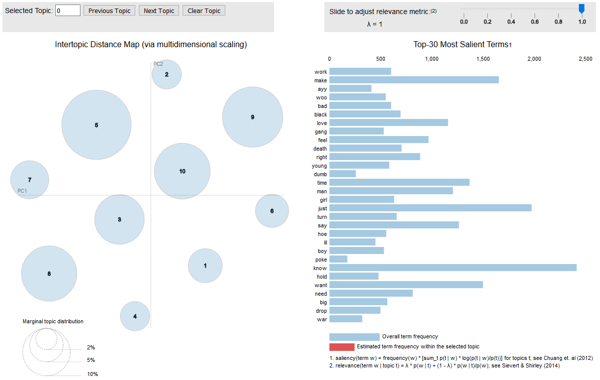

Topic Modeling over Song Lyrics
Visualizing Topic Models on Song Lyrics
A common evaluation of Natural Language is deriving meaning from
large amounts of text. Current techniques involve splitting the body of
text into single words (tokenization) that are then analyzed for their inflection (i.e. its grammatical category - tense, case, voice, aspect…etc.) called lemmatization.
Statistical models can be applied to understand the similarity between
the tokens. In the early 2000’s, a technique called Latent Dirichlet
Allocation (LDA) was introduced as a statistical method of discovering
topics in a body of text. Simply put, LDA is a generative model that
determines the probability of a topic Z over a given topic distribution X and its target (a body of text) Y. LDA assumes that a body of text can have multiple underlying topics.
Preparing the data
I have over 200 saved playlists in Spotify across different genres so this would be a great dataset to perform analysis on. The Spotify API provides an interface to extract artist, album, track, and audio metadata. Genius.com offers an API to extract lyrics of a given track. Using these two interfaces in python, I will build a dataset containing:
- artist
- album
- track name
- lyrics
- audio metadata (audio analysis and features)
To integrate these APIs to build the dataset, I will create a couple functions to put all of the pieces together that iteratively collect each playlist, pass its metadata to the genius API and extract the lyrics
def user_playlists(self, user, limit, offset):
return self._get("users/%s/playlists" % user,limit, offset)
def show_tracks(results):
for i,item in enumerate(results['items']):
track = item['track']
a_analysis = sp.audio_analysis(track['id'])
a_features = sp.audio_features(track['id'])
response = request_song_info(track['artists'][0]['name'], track['name'])
json = response.json()
remote_song_info = None
for hit in json['response']['hits']:
if track['artists'][0]['name'].lower() in hit['result']['primary_artist']['name'].lower():
remote_song_info = hit
break
if remote_song_info:
song_url = remote_song_info['result']['url']
lyrics = scrap_song_url(song_url)
else:
lyrics = "No Lyrics Found"
compiled_info = [{"Artist": a, "Album": b, "Release_Date": c, "Track_Name": d, "Track_Duration_ms": e, "Popularity": f, "Track_Audio_Analysis": g, "Track_Audio_Features": h, "Lyrics": i} for a,b,c,d,e,f,g,h,i in zip(artist,album,release_date,track_name,track_duration_ms,popularity,track_audio_analysis, track_audio_features, genius_lyrics)]
return compiled_info
Now to pull all of the data together and compile the dataset:
while ( offset_counter <= total_playlists):
playlists = sp.user_playlists(uname, limit = load_limit, offset = offset_counter )
for playlist in playlists['items']:
if playlist['owner']['id'] == uname:
results = sp.user_playlist(uname, playlist['id'], fields="tracks,next")
tracks = results['tracks']
playlist_tracks.append(show_tracks(tracks))
while tracks['next']:
tracks = sp.next(tracks)
playlist_tracks.append(show_tracks(tracks))
playlist_json = json.dumps(playlist_tracks)
playlist_output_file = "playlist_chunk{}.json".format(offset_counter)
print("current offset: " + str(offset_counter))
with open(playlist_output_file,"w") as f:
f.write(playlist_json)
f.close()
offset_counter += 51
Data Pre Processing
Once all of the playlist metadata is compiled, it needs to go through some pre-processing: tokenization and lemmatization. This is just a fancy way of saying that the body of text will be broken up into individual words and then tagged with its corresponding part of speech (e.g. noun, verb, adjective..etc.)
def filter_words(filename):
filter_set = pd.DataFrame()
for filename in glob.glob(filename):
temp_df = pd.read_csv(filename, header=None, sep=',')
filter_set = temp_df[0].values.tolist()
filter_words = [word.replace(',','') for word in filter_set]
return filter_words
def preprocess_lyrics(pd_df, filter_words_list):
list(STOP_WORDS).extend(filter_words_list)
pd_df['Lyrics'] = pd_df['Lyrics'].str.replace('[^\w\s]','').str.lower().str.split()
pd_df['Lyrics'] = pd_df['Lyrics'].apply(lambda x: [item for item in x if item not in filter_words_list])
return pd_df
def tokenize_lyrics (lyrics):
for sentence in lyrics:
yield(gensim.utils.simple_preprocess(str(sentence), deacc=True))
def lemmatize_lyrics (lyrics, allowed_postags = ['NOUN', 'ADJ', 'VERB', 'ADV']):
nlp = spacy.load('en_core_web_sm', disable = ['parser', 'ner'])
text_out=[]
for sentence in lyrics:
doc = nlp(" ".join(sentence))
text_out.append(" ".join([token.lemma_ if token.lemma_ not in ['-PRON-'] else '' for token in doc if token.pos_ in allowed_postags]))
return text_out
Feature Extraction
To perform statistical modeling, the list of tokens need to be converted into a numerical representation. This is known as ‘sparse features’ - resulting in a matrix containing the counts of each token (sparse matrices will contain a lot of zeros). Next, the sparse matrix will be compressed (to reduce the number of zeros) into a set of ‘dense features’ which is a required input into the LDA model.
lda_vectorizer = CountVectorizer(analyzer='word', min_df=10, stop_words='english', lowercase=True, token_pattern='[a-zA-Z0-9]{3,}')
vectorize_lyrics = lda_vectorizer.fit_transform(lemmatized_lyrics)
density = vectorize_lyrics.todense()
To see how many zero elements remain in our dense matrix, we can look at sparsity
print("Sparsicity:", ((density > 0).sum()/density.size)*100,"%")
Building a baseline LDA Model
A baseline LDA model can be developed using the dense vector. The parameters for the model include:
n_topics how many topics to discover
max_iter number of learning iterations
learning_method the method of variational Bayesian Inference to learn topics
batch size The number of documents to use in each training iteration
perplexity evauluation Determines the perplexity of the model after n-iterations.
Additionally, we want to show the performance of the baseline model with the following validation metrics: Log-Likelihood and Perplexity
Log-Likelihood and Perplexity are measures of how well a probability distribution fits a new set of data. Perplexity is expressed as a score, the higher the better.
def build_LDA(vector):
lda_model = LatentDirichletAllocation(n_components=10, max_iter=20, learning_method='batch', random_state=100, batch_size = 100, evaluate_every = 10, n_jobs=1)
lda_output = lda_model.fit_transform(vector)
print("Base Model Log-Likelihood:", lda_model.score(vector))
print("Base Model Perplexity:", lda_model.perplexity(vector))
return lda_output
The baseline model metrics obtained from the lyric data below show the model increases perplexity and log-Likelihood over time:
Batch Number: 1 Log-Likelihood: -231384.91089204518 Perplexity: 403.187349204198 Sparsicity: 6.5403131222213124 %
Batch Number: 2 Log-Likelihood: -383902.0992060229 Perplexity: 542.5971631266931 Sparsicity: 4.402649664219081 %
Batch Number: 3 Log-Likelihood: -554721.0211572415 Perplexity: 626.5850111194372 Sparsicity: 3.054593658859907 %
Batch Number: 4 Log-Likelihood: -699000.4114972427 Perplexity: 679.6794398272324 Sparsicity: 2.5980898343763665 %
Batch Number: 5 Log-Likelihood: -1284881.785763533 Perplexity: 827.1780702589926 Sparsicity: 2.062455946799056 %
Visualizing the Topic Model
A visual of the topic model can be created using the LDAViz library. This gives us the ability to see the dominant words in each topic cluster and a comparison against the the word frequency as a whole.
def LDA_Viz(vector, best_lda_model, vectorizer):
pyLDAvis.disable_notebook()
panel = pyLDAvis.sklearn.prepare(best_lda_model, vector, vectorizer, mds ='tsne', n_jobs=1, sort_topics=False)
pyLDAvis.show(panel, ip='127.0.0.1', port=8888,local=True, open_browser=True)
LDA_Viz(vectorize_lyrics,best_lda_model,lda_vectorizer)
